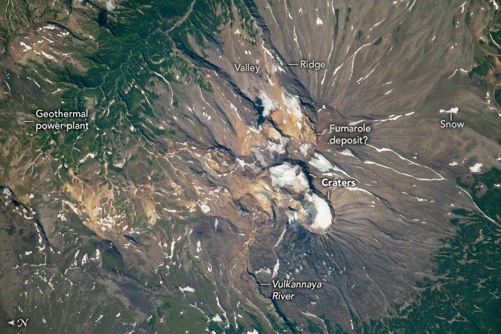

Mutnovsky Volcano
Mutnovsky Volcano, located on Russia’s Kamchatka Peninsula, is a volcanic complex with numerous brown cinder cones and two large figure-eight-shaped craters. An astronaut aboard the International Space Station captured this high-resolution photograph of the volcano during summer, showing ridges radiating outward from the central cinder cone, topped by white snow and ice.
Most of the Kamchatka Peninsula, including Mutnovsky Volcano, lies at a latitude north of the space station’s orbital inclination, which is limited to latitudes 51.65° north and south of the equator. To photograph higher-latitude regions, astronauts typically use a high focal length lens with an oblique view.
Mutnovsky’s high latitude (52.4° N) and elevation of over 7,000 feet (2,100 meters) allow it to sustain glaciers and significant snow cover even during warmer months. Green vegetation fills the low-lying valleys, while surrounding areas are covered by volcanic deposits.
The volcano is among the most active in southern Kamchatka, with the last major eruption in 2000. The ridges and valleys visible in this image formed from past eruptions and subsequent erosion by rainfall and meltwater. The Vulkannaya River flows out of the Northeast Crater, carrying volcanic sediments downstream.
Along the northern flanks, lighter-brown to orange-tan hues are likely due to minerals deposited by a large fumarole field. Fumaroles are cracks that emit volcanic gases and steam, which can reach several hundred degrees. These features often host mineral deposits and enable the harnessing of the volcano’s geothermal energy. A geothermal power plant, visible as a circular feature north of the volcano, contributes significantly to the region’s electricity supply.